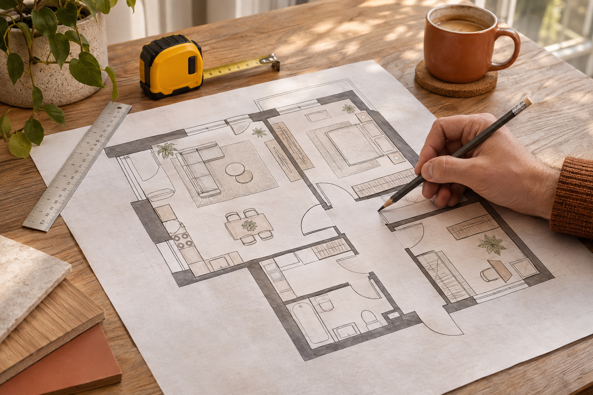
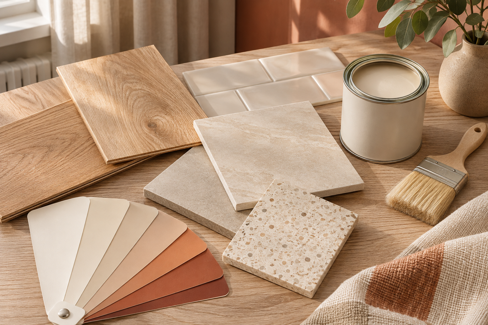
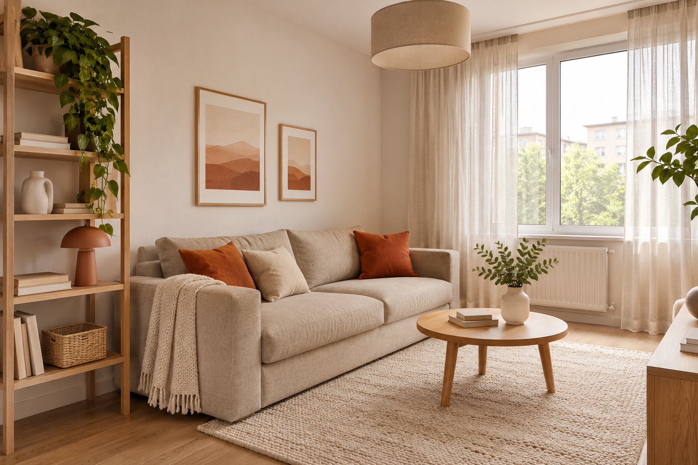
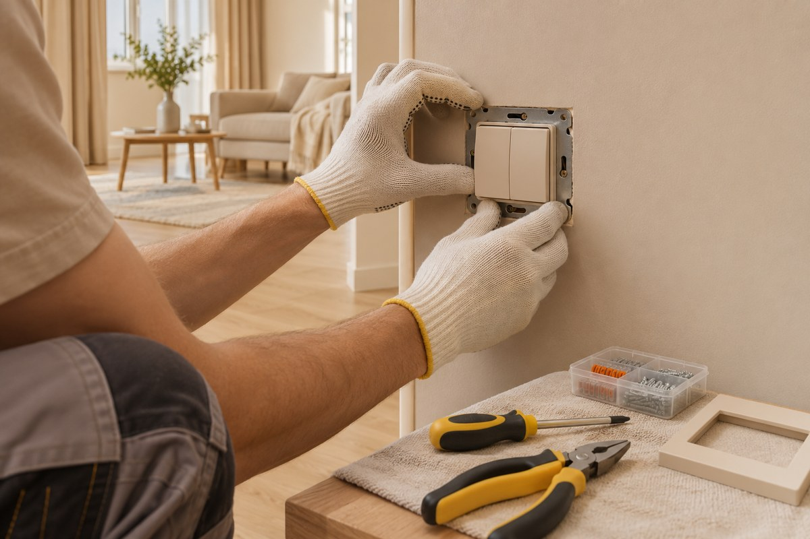
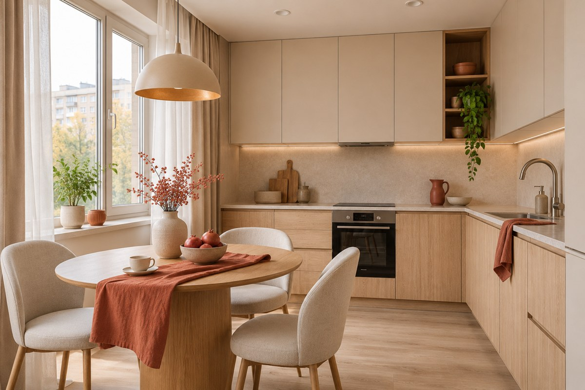

Подготовим квартиру к перепродаже — от дизайна до готового ремонта
Создадим ликвидный интерьер, рассчитаем смету, подберём материалы и организуем ремонт, чтобы объект быстрее вышел на рынок и не потерял маржу на переделках и лишних расходах.
Чем дольше квартира находится в ремонте, тем дольше ваши деньги не работают
- Ремонт затягивается и сдвигает дату продажи
- Итоговый бюджет оказывается выше первоначальной сметы.
- Дизайнера, материалы и бригаду приходится искать самостоятельно.
- Переделки увеличивают сроки и стоимость ремонта
- Дорогие дизайнерские решения не всегда повышают цену продажи
- Продуманный ремонт снижает привлекательность квартиры
Наша задача - подготовить квартиру к продаже, сохранив качество ремонта и согласованный бюджет!
Три формата работы
Выберите объём — от одного дизайн-проекта до полного цикла под ключ.
-
01
Дизайн-проект
Планировочное решение, визуализация, рабочие чертежи и подбор материалов. Подрядчика на ремонт вы выбираете сами.
Обсудить -
02
Дизайн + материалы
К дизайн-проекту добавляем подбор материалов, расчёт их количества и стоимости. Помогаем с закупкой и доставкой на объект.
Обсудить -
03
Ремонт под ключ
Дизайн, материалы, ремонтные работы и контроль качества. Вы получаете готовую квартиру и отчёты о выполнении каждого этапа.
Обсудить
Ремонт, в котором продуман каждый шаг
«Строим вместе» — команда, которая помогает создавать удобное и современное пространство для жизни. Мы занимаемся подготовкой квартир к ремонту, разработкой интерьерных решений и организацией отделочных работ. Для нас важно, чтобы готовый интерьер соответствовал привычкам владельца, особенностям помещения и согласованному бюджету. Поэтому каждый проект начинается с внимательного разговора о том, каким должен стать будущий дом.
Как начинается работа
На первой встрече мы обсуждаем пожелания заказчика и знакомимся с квартирой. Выясняем, сколько человек будет здесь жить, какие помещения используются чаще всего и чего не хватает в существующей планировке. Одним владельцам необходимо больше мест для хранения, другим — отдельное рабочее место или просторная кухня. Эти подробности помогают выбрать решения, которые будут полезны каждый день. После обсуждения мы составляем предварительный план ремонта. В нём определяются основные задачи, последовательность работ и предполагаемые расходы. Важно заранее понять, какие изменения необходимы, а от каких можно отказаться. Такой подход позволяет распределить бюджет и избежать необдуманных покупок. До начала ремонта заказчик должен представлять, что будет сделано и какой результат он получит.
Планировка и удобство

Хороший интерьер должен быть не только красивым, но и удобным. Мы обращаем внимание на расположение мебели, ширину проходов, доступ к окнам и открывание дверей. Заранее продумываем места для розеток, выключателей и осветительных приборов. Небольшая ошибка на этом этапе может создавать неудобства в течение многих лет, поэтому обсуждению планировки уделяется особое внимание. Мы стремимся использовать площадь квартиры рационально. Для небольших помещений подбираются компактная мебель, спокойные оттенки и понятные системы хранения. В просторных комнатах важно сохранить ощущение свободного пространства. При этом все помещения должны сочетаться между собой по цветам, материалам и общему настроению, чтобы квартира воспринималась как единое целое.
Выбор материалов

Отделочные материалы подбираются с учётом условий эксплуатации и бюджета. Для прихожей важна устойчивость к загрязнениям, для кухни — простота ухода, для ванной комнаты — возможность использования во влажной среде. Мы сравниваем характеристики материалов и объясняем, почему определённое решение подходит конкретному помещению. Дорогой материал не всегда оказывается самым практичным вариантом. Перед закупкой рассчитывается необходимое количество материалов с разумным запасом. Образцы желательно оценить при естественном и искусственном освещении, поскольку оттенки могут выглядеть по-разному. Также проверяется сочетание напольного покрытия, стен, дверей и мебели. Это помогает избежать случайных решений, которые по отдельности кажутся удачными, но плохо сочетаются в готовом интерьере.
Готовый результат

После завершения работ проводится осмотр квартиры. Проверяются качество отделки, аккуратность стыков, работа оборудования и удобство использования помещений. Важно убедиться, что результат соответствует согласованным решениям, а все замечания учтены. Владельцу также полезно получить рекомендации по уходу за покрытиями и мебелью. Наша цель — создать интерьер, которым удобно пользоваться каждый день. Мы ценим продуманную планировку, аккуратное исполнение и понятные договорённости. Для нас ремонт считается завершённым тогда, когда квартира становится цельным, комфортным пространством, а её владелец понимает, как устроен его обновлённый дом.
Инженерные работы и бюджет

До начала ремонта важно определить не только желаемый результат, но и допустимые расходы. Мы составляем перечень работ, учитываем площадь помещений, состояние инженерных систем и выбранные материалы. Отдельно обсуждаем обязательные задачи и решения, которые можно отложить. Заказчик понимает, из чего складывается стоимость и какие изменения повлияют на итоговую сумму.
В смете полезно предусмотреть резерв на непредвиденные обстоятельства: часть особенностей квартиры становится заметна только после демонтажа старой отделки. Дополнительные работы согласовываются заранее. Мы не предлагаем экономить на безопасности проводки и качестве подготовки поверхностей: такие решения скрыты от глаз, но определяют срок службы ремонта.
Организация и контроль работ
Работы удобнее выполнять по заранее составленному плану. Сначала подготавливают помещение и инженерные коммуникации, затем переходят к выравниванию поверхностей, отделке и установке оборудования. Последовательность помогает избежать ситуаций, когда готовое покрытие приходится повреждать ради забытой розетки или дополнительной трубы.
На каждом этапе проверяются качество исполнения и соответствие проекту. Заказчику проще следить за процессом, если есть понятный график, фотографии выполненных работ и перечень ближайших задач. Поставки материалов согласуются с ходом ремонта, чтобы упаковки не загромождали квартиру и не мешали мастерам. Все изменения фиксируются до перехода к следующему этапу.
Уход за обновлённым интерьером

После завершения ремонта важно сохранить результат. Для разных покрытий подходят разные способы уборки: деревянные поверхности защищают от избытка воды, для окрашенных стен выбирают мягкие средства, а вентиляционные решётки регулярно очищают от пыли. Рекомендации производителей помогают продлить срок службы материалов без сложного ухода.
Мы советуем сохранить названия оттенков краски, артикулы плитки, схемы коммуникаций и инструкции к оборудованию. Небольшой запас отделочных материалов пригодится для локального ремонта. При расстановке мебели нужно оставить доступ к розеткам, счётчикам и запорным кранам. Продуманные бытовые привычки помогают квартире оставаться удобной и аккуратной спустя годы после обновления.
Есть квартира под перепродажу? Давайте обсудим ваш проект
Расскажите о квартире и пожеланиях к ремонту. Подберём подходящий формат работы.